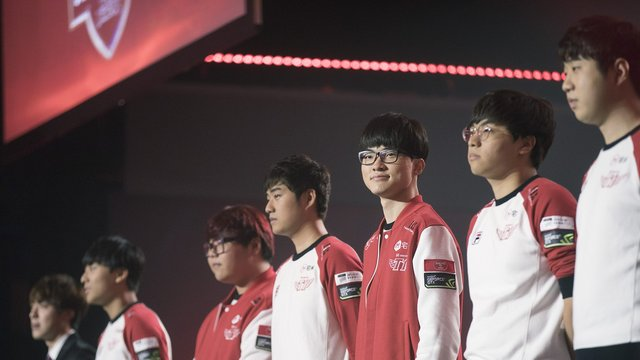

SKT Telecom T1 Confirmed themselves as the second team to make it to the Worlds Semifinals after a 3-1 victory over China’s Royal Never Give Up in the second Quarterfinal in Chicago. They will face off against the winner of Saturday’s match between ROX Tigers from Korea and Edward Gaming from China, both first seeds from their respective regions.
SKT, the second seed from Korea and reigning two-time world champions, naturally came into this best of series as firm favourites, having looked impressive throughout the tournament thus far, perhaps as impressive as fellow Korean team Samsung Galaxy. Many were already calling them the Worlds winners elect they performed to expectations during Groups. They were, however, against a team that featured perhaps the biggest collection of individual talent at the tournament in RNG.
At the same time, ANX are still Wildcard qualifiers. The LCL is not (yet) a top region, like many of the other undeveloped regions such as Brazil and Turkey, and for them to progress beyond the Quarterfinals stage would be an even bigger shock than reaching it in the first place. They performed admirably in the Group Stages, but the Knockout Stage are another level entirely. The big was question was always if could translate their performances in the best-of-one Group Stage to the best-of-five format in Quarters.

JUST WARMING UP
Uzi and Mata, the latter a Worlds winner himself, would look to play spoiler to SKT’s hopes of reaching the Semifinals once again. The RNG bot lane posed one of the biggest threats Bang and Wolf would face in their career. Uzi is a mechanical god, perhaps the best home grown player China has ever produced. He is a two-time Worlds finalist, and his counterpart Mata won Worlds in 2014 with Samsung White. The teams they faced in Group D, particularly North America’s TSM, had already felt their wrath in the bot lane.
In fact, this series featured perhaps the biggest collection of talent we have seen at a major League of Legends tournament matchup. Reigning champions SKT, including two-time winners Bengi and Faker, against former world champions Mata and Looper, not to mention Uzi. To see some of the best players ever to have played League of Legends professionally face each other in an historic venue like the Chicago Theater was special, even if the outcome was expected.The series didn’t begin according to the script, however, as RNG came on to the Rift with purpose in their player while SKT struggled with the pace of the game. Key to RNG’s strategy were of course Uzi and Mata, as they picked a Jhin and Zyra combo to ensure they would have full reign over the bot lane. It wasn’t just the bot lane that showed their ability, however, as Looper reminded everyone in the Theater that he also won Worlds before, solo killing Duke for first blood.
RNG struggled to keep control of the game in the grasp as SKT’s carries began to ramp up; Faker and Bang were dangerous opponents on Viktor and Ezreal respectively, and the Chinese outfit looked to have ceded control completely to SKT, until RNG managed to pick up a completely uncontested Baron from right under SKT’s nose. The Baron turned into kills, an Elder Drake, and ultimately a shock first-game victory for RNG. We had a series on our hands.